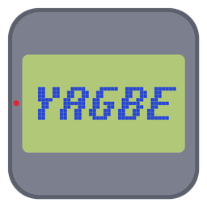
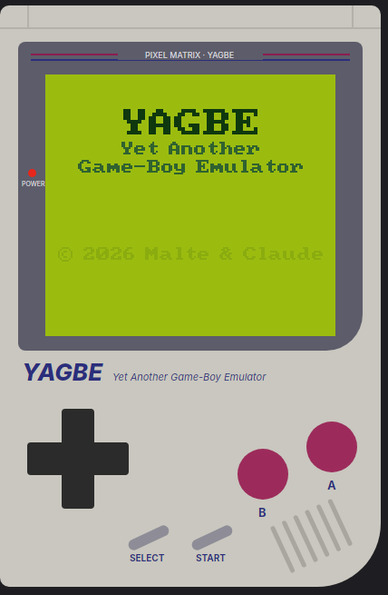
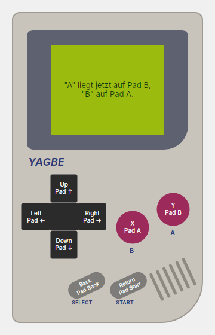
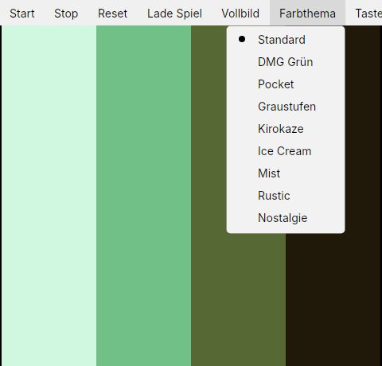
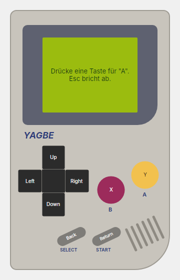

♪
Originalgetreuer Ton
Alle vier Soundkanäle des Game Boy, ausgegeben über OpenAL.

YAGBEYet Another Game-Boy Emulator
YAGBE spielt klassische Game-Boy-Spiele unter Windows, Linux und macOS. Kostenlos, ohne Installation: herunterladen, entpacken, loslegen.
Neueste Version wird geladen …
Probier ihn aus: Klick auf die Tasten oder nutze ↑↓ und Enter. A lädt herunter, SELECT wechselt die Farben.
Alle vier Soundkanäle des Game Boy, ausgegeben über OpenAL.
Xbox-, PlayStation- und andere Gamepads werden erkannt. Tasten frei belegbar.
Vom klassischen DMG-Grün bis Kirokaze oder Ice Cream, eigene Paletten inklusive.
Jederzeit speichern und laden: Schnellspeicher plus zehn Slots mit Uhrzeit im Menü Save States. F5 speichert, F8 lädt, F6/F7 wechseln den Slot, am Controller RB/LB/X/Y. Tasten frei belegbar.
Mit F11 ins Vollbild, scharfe Pixel ohne Weichzeichner.
Windows, Linux und macOS (Intel und Apple-Chip). Nichts zu installieren.




Immer die neueste Version. Ältere findest du unter allen Versionen.
Spiele (ROMs) sind nicht enthalten. Nutze nur Spiele, die du selbst besitzt.
YAGBE ist (noch) nicht bei Microsoft oder Apple registriert. Deshalb fragt dein System beim ersten Start einmal nach.
YAGBE die Datei YAGBE.exe starten.YAGBE die Datei YAGBE starten (Doppelklick oder im Terminal ./YAGBE).YAGBE.app in den Ordner Programme ziehen.xattr -cr /Applications/YAGBE.app eingeben, danach startet die App normal.